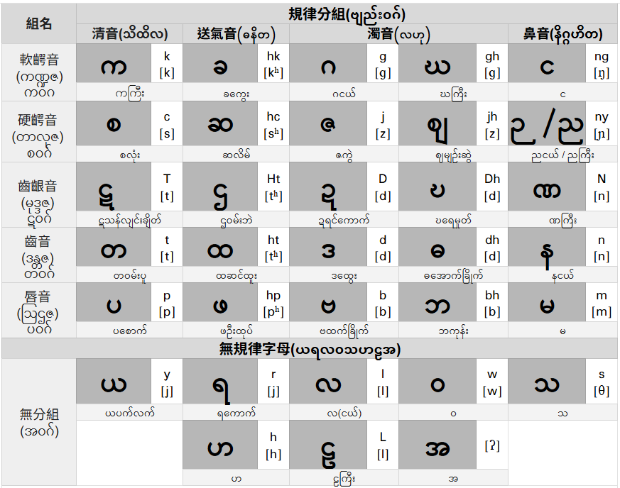

現代緬甸語緬文字共有33個常規子音：
- 字母表分為7行，前5行皆是有發音規律之字母。
- 分為硬顎音行、齒齦音行、齒音行及唇音行，以及送氣音列、清音列、濁音列及鼻音列。
- 字母下方為字母名稱，用來方便區別不同之字母。
- 字母右方為音標：
- 上為緬甸語拉丁轉寫(改寫自緬甸語委轉寫系統(MLC Transcription System/မြန်မာဘာသာစကားကော်မရှင်၊စာသားမှတ်တမ်းစနစ်))
- 下為國際音標(IPA)
က
ကကြီး 大的k
k [k]
ခ
ခခွေး 曲折hk
hk [kʰ]
ဂ
ဂငယ် 小的g
g [ɡ]
ဃ
ဃကြီး 大的gh
gh [ɡ]
င
င
ng [ŋ]
စ
စလုံး 圓圈c
c [s]
ဆ
ဆလိမ် 扭曲hc
hc [sʰ]
ဇ
ဇခွဲ 裂口j
j [z]
ဈ
ဈမျဉ်းဆွဲ 劃直線jh
jh [z]
ည ¹
ညကြီး 大的ny
ny(ñ, gn) [ɲ]
ဋ
ဋသန်လျင်းချိတ် 輦轎鉤T
T(t) [t]
ဌ
ဌဝမ်းဘဲ 鴨腳Ht
Ht(ht) [tʰ]
ဍ
ဍရင်ကောက် 蕨類D
D(d) [d]
ဎ
ဎရေမှုတ် 杓子Dh
Dh(dh) [d]
ဏ
ဏကြီး 大N
N(n) [n]
တ
တဝမ်းပူ 胖肚t
t [t]
ထ
ထဆင်ထူး 腳鐐ht
ht [tʰ]
ဒ
ဒထွေး 老么d
d [d]
ဓ
ဓအောက်ခြိုက် 下緣弧d
dh [d]
န
နငယ် 小n
n [n]
ပ
ပစောက် 深的p
p [p]
ဖ
ဖဦးထုပ် 帽子hp
hp [pʰ]
ဗ
ဗထက်ခြိုက် 尖凹b
b [b]
ဘ
ဘကုန်း 彎腰b
bh [b]
မ
မ
m [m]
ယ
ယပက်လက် 仰臥y
y [j]
ရ
ရကောက် 彎曲r
r ([j] [r]) [ɹ]²
လ
လ(ငယ်) 小l
l [l]
ဝ
ဝ
w [w]
သ
သ
s(tt) [θ]
ဟ
ဟ
h [h]
ဠ
ဠကြီး 大L
L(l) [l]
အ
အ
³ [ʔ]
註釋：
¹ ဉ （ညကလေး 小的ny）為ည之變體，用來與ာ組音節，也可用於韻尾。
² ရ 在固有單字中念做[j]，而於一些方言中念做[r]，在藉詞中念做[ɹ]或[r]。
³ အ 於音標中不標，用於純母音或襯字。